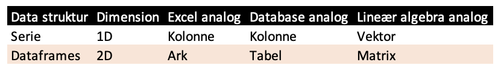
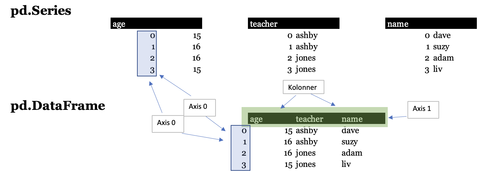

Pandas
Contents
Pandas¶
A work though of the most important concept in python most essentiel data tools, pandas.
Series og Dataframes¶
En af de første ting som er værd at forstå ved Pandas er at det hovedsaglig er bygget af to data struktur:
SerierDataframes

Figur 1: Forskel mellem Serie og dataframes.
At forstå at der er en forskel mellem de to struktur vil gerne en i ens brug af Pandas. Da dataframes er et bundt af serier giver det mening at lave et deep dive ind i serier.

Figur 2: Figuren viser forholdet mellem data strukturen i pandas.
Lad os nu lave en panda serie.
import pandas as pd
songs2 = pd.Series([145, 142, 38, 13], name='counts')
songs2
0 145
1 142
2 38
3 13
Name: counts, dtype: int64
import numpy as np
songs3 = np.array([145, 142, 38, 13])
print("Numpy: \n", songs3[1])
print("Pandas: \n", songs2[1])
Numpy:
142
Pandas:
142
Venstre kolonne, som ikke er en del af selve data værdien er vores index.
En Pandas serier og numpy array er meget lig hinanden og kan begge lave index operationer.
Kategorisk variabler¶
Hvis man ved at en serier har få værdier kan man bruge en kategorisk variabel som har fordelene:
Bruger mindre hukommelse end strings.
Forbedre præsentation.
Ordre
En fordel ved kategorisk variabler er de kan indeholder dato, tal og bogstaver som hhv. kan konverteres til et andet format.
En kategori kan laves med dtype=category eller med .astype("category").
s = pd.Series(['xs', 's', 'm', 'l', 'xl'], dtype='category')
s
0 xs
1 s
2 m
3 l
4 xl
dtype: category
Categories (5, object): ['l', 'm', 's', 'xl', 'xs']
s2 = pd.Series(['m', 'l', 'xs', 's', 'xl'])
size_type = (
pd
.api
.types
.CategoricalDtype(categories = ['s', 'm', 'l'],
ordered = True)
)
s3 = s2.astype(size_type)
s3
0 m
1 l
2 NaN
3 s
4 NaN
dtype: category
Categories (3, object): ['s' < 'm' < 'l']
s3 > 's'
0 True
1 True
2 False
3 False
4 False
dtype: bool
Den forrig funktion transformerede vi om til en ordre kategory, men vi kan også gøre det med det samme.
Vi kan med CategoricalDtype lave en kategori med en ordre.
s2 = pd.Series(['m', 'l', 'xs', 's', 'xl'])
size_type = (
pd
.api
.types
.CategoricalDtype(categories = ['s', 'm', 'l'],
ordered = True)
)
s3 = s2.astype(size_type)
s3
0 m
1 l
2 NaN
3 s
4 NaN
dtype: category
Categories (3, object): ['s' < 'm' < 'l']
Dunder operator¶
Dunder metoder kendes også under “operator” eller “magic” metoder. Helt kort er de beskrivelser på hvordan Python reagerer til operationer. F.eks. når man bruger + så vil man nedenunder benytte sig af .__add__ metoden.
print("Dunder metoden", 2+2)
f'hvad sker der egentlig: {(2).__add__(4)}'
Dunder metoden 4
'hvad sker der egentlig: 6'
Dataframe¶
Aggregation¶
I pandas er der flere måde at summer data på.
Dette afsnit omhandler nogle af disse metoder. Her vil vi allerede først starte ud med den simple .agg og udvide det til de mere omfattende metode; .pivot_table, .groupby og .crossbar.
Disse funktioner minder meget om hinanden og gør i bund og grund de samme ting.
Metode |
Beskrivelse |
|---|---|
s.agg(func=None, axis=0, *args, **kwargs) |
Returns a scalar if func is a single aggregation function. Returns a series if a list of aggregations are passed to func. |
s.all(axis=0, bool_only=None, skipna=True, level=None) |
Returns True if every value is truthy. Otherwise False |
s.any(axis=0, bool_only=None, skipna=True, level=None) |
Returns True if at least one value is truthy. Otherwise False |
s.autocorr(lag=1) |
Returns Pearson correlation between s and shifted s |
s.corr(other, method=’pearson’) |
Returns correlation coefficient for ‘pearson’, ‘spearman’, ‘kendall’, or a callable. |
s.cov(other, min_periods=None) |
Returns covariance. |
s.min(axis=None, skipna=None, level=None,numeric_only=None) |
Returns maximum value. |
s.mean(axis=None, skipna=None,level=None, numeric_only=None) |
Returns minumum value. |
s.median(axis=None, skipna=None,level=None, numeric_only=None) |
Returns mean value. |
s.prod(axis=None, skipna=None,level=None, numeric_only=None,min_count=0) |
Returns product of s values. |
s.quantile(q=.5, interpolation=’linear’) |
Returns 50% quantile by default. Note returns Series if q is a list |
s.sem(axis=None, skipna=None, level=None,ddof=1, numeric_only=None) |
Returns unbiased standard error of mean. |
s.sem(axis=None, skipna=None, level=None,ddof=1, numeric_only=None) |
Returns unbiased standard error of mean. |
s.sem(axis=None, skipna=None, level=None,ddof=1, numeric_only=None) |
Returns unbiased standard error of mean. |
s.std(axis=None, skipna=None, level=None, ddof=1, numeric_only=None) |
Returns sample standard deviation. |
s.var(axis=None, skipna=None, level=None, ddof=1, numeric_only=None) |
Returns unbiased variance. |
s.skew(axis=None, skipna=None, level=None, numeric_only=None) |
Returns unbiased skew. |
s.kurtosis(axis=None, skipna=None, level=None, numeric_only=None) |
Returns unbiased kurtosis. |
s.nunique(dropna=True) |
Returns count of unique items. |
s.count(level=None) |
Returns count of non-missing items. |
s.size |
Number of items in series. (Property) |
s.is_unique |
True if all values are unique |
Metode |
Beskrivelse |
|---|---|
pd.crosstab(index, columns, values=None,rownames=None, colnames=None,aggfunc=None, margins=False,margins_name=’All’, dropna=True,normalize=False) |
Create a cross-tabulation (counts by default) from an index (series or list of series) and columns (series or list of series). Can specify a column (series) to aggregate values along with a function, aggfunc. Using margins=True will add subtotals. Using dropna=False will keep columns that have no values. Can normalize over ‘all’ values, the rows (‘index’), or the ‘columns’. |
.pivot_table(values=None, index=None,columns=None, aggfunc=’mean’,fill_value=None, margins=False,margins_name=’All’, dropna=True,observed=False, sort=True) |
Create a pivot table. Use index (series, column name, pd.Grouper, or list of previous) to specify index entries. Use columns (series, column name, pd.Grouper, or list of previous) to specify column entries. The aggfunc (function, list of functions, dictionary (column name to function or list of functions) specifies function to aggregate values. Missing values are replaced with fill_value. Set margins=True to add subtotals/totals. Using dropna=False will keep columns that have no values. Use observed=True to only show values that appeared for categorical groupers. |
.groupby(by=None, axis=0, level=None,as_index=True, sort=True,group_keys=True, observed=False,dropna=True) |
Return a grouper object, grouped using by (column name, function (accepts each index value, returns group name/id), series, pd.Grouper, or list of column names). Use as_index=False to leave grouping keys as columns. Common plot parameters. Use observed=True to only show values that appeared for categorical groupers. Using dropna=False will keep columns that have no values. |
df.resample(rule, axis=0, closed=None,label=None, convention=’start’,kind=None, on=None, level=None,origin=’start_day’) |
Return a resampled dataframe (with a date in the index, or specify the date column with on). Set closed to ‘right’ to include the right side of interval (default is ‘right’ for M/A/Q/BM/BQ/W). Set the label to ‘right’ to use the right label for bucket. Can specify the timestamp to start origin. |
import numpy as np
import pandas as pd
import matplotlib.pyplot as plt
df = pd.read_excel('00_data_raw/bikes.xlsx')
df.head()
| bike.id | model | description | price | |
|---|---|---|---|---|
| 0 | 1 | Supersix Evo Black Inc. | Road - Elite Road - Carbon | 12790 |
| 1 | 2 | Supersix Evo Hi-Mod Team | Road - Elite Road - Carbon | 10660 |
| 2 | 3 | Supersix Evo Hi-Mod Dura Ace 1 | Road - Elite Road - Carbon | 7990 |
| 3 | 4 | Supersix Evo Hi-Mod Dura Ace 2 | Road - Elite Road - Carbon | 5330 |
| 4 | 5 | Supersix Evo Hi-Mod Utegra | Road - Elite Road - Carbon | 4260 |
(
df
['price']
.sum()
)
383515
.aggandAggregationStrings¶
.agg metoden transformer data. Det er også brugbar hvis man har flere aggregationer.
(
df
['price']
.agg([sum, np.mean, np.var])
)
sum 3.835150e+05
mean 3.953763e+03
var 8.247762e+06
Name: price, dtype: float64
Du kan også tilføje en dictonary så kan lave udregninger på flere kolonner.
df.agg({'model': ['count'], 'price': ['sum', 'max']})
| model | price | |
|---|---|---|
| count | 97.0 | NaN |
| sum | NaN | 383515.0 |
| max | NaN | 12790.0 |
Til pandas er der en række metoder der går igen for aggreation.
bikesshop = pd.read_excel("00_data_raw/orderlines.xlsx")
bikesshop.head()
/Library/Frameworks/Python.framework/Versions/3.10/lib/python3.10/site-packages/openpyxl/styles/stylesheet.py:226: UserWarning: Workbook contains no default style, apply openpyxl's default
warn("Workbook contains no default style, apply openpyxl's default")
| Unnamed: 0 | order.id | order.line | order.date | customer.id | product.id | quantity | |
|---|---|---|---|---|---|---|---|
| 0 | 1 | 1.0 | 1.0 | 2011-01-07 | 2.0 | 48.0 | 1.0 |
| 1 | 2 | 1.0 | 2.0 | 2011-01-07 | 2.0 | 52.0 | 1.0 |
| 2 | 3 | 2.0 | 1.0 | 2011-01-10 | 10.0 | 76.0 | 1.0 |
| 3 | 4 | 2.0 | 2.0 | 2011-01-10 | 10.0 | 52.0 | 1.0 |
| 4 | 5 | 3.0 | 1.0 | 2011-01-10 | 6.0 | 2.0 | 1.0 |
from string import ascii_uppercase
cols = list(ascii_uppercase[:10])
np.random.seed(42)
data = np.random.randint(1, 100, size=(100_000, 10))
df = pd.DataFrame(data, columns=cols)
df.head()
| A | B | C | D | E | F | G | H | I | J | |
|---|---|---|---|---|---|---|---|---|---|---|
| 0 | 52 | 93 | 15 | 72 | 61 | 21 | 83 | 87 | 75 | 75 |
| 1 | 88 | 24 | 3 | 22 | 53 | 2 | 88 | 30 | 38 | 2 |
| 2 | 64 | 60 | 21 | 33 | 76 | 58 | 22 | 89 | 49 | 91 |
| 3 | 59 | 42 | 92 | 60 | 80 | 15 | 62 | 62 | 47 | 62 |
| 4 | 51 | 55 | 64 | 3 | 51 | 7 | 21 | 73 | 39 | 18 |
pivot_table¶
(
pd.crosstab(index = df.A, columns = df.B)
)
| B | 1 | 2 | 3 | 4 | 5 | 6 | 7 | 8 | 9 | 10 | ... | 90 | 91 | 92 | 93 | 94 | 95 | 96 | 97 | 98 | 99 |
|---|---|---|---|---|---|---|---|---|---|---|---|---|---|---|---|---|---|---|---|---|---|
| A | |||||||||||||||||||||
| 1 | 15 | 9 | 8 | 10 | 15 | 10 | 12 | 17 | 12 | 10 | ... | 11 | 11 | 6 | 9 | 9 | 6 | 9 | 10 | 8 | 9 |
| 2 | 14 | 5 | 13 | 6 | 5 | 11 | 11 | 15 | 10 | 13 | ... | 9 | 9 | 6 | 12 | 8 | 7 | 14 | 8 | 6 | 11 |
| 3 | 12 | 11 | 10 | 15 | 8 | 12 | 9 | 12 | 8 | 13 | ... | 12 | 7 | 8 | 9 | 8 | 10 | 13 | 9 | 10 | 13 |
| 4 | 6 | 21 | 13 | 10 | 8 | 10 | 14 | 14 | 12 | 5 | ... | 12 | 9 | 9 | 9 | 10 | 9 | 4 | 3 | 13 | 11 |
| 5 | 9 | 8 | 9 | 6 | 8 | 3 | 8 | 10 | 12 | 14 | ... | 6 | 9 | 14 | 10 | 10 | 12 | 4 | 8 | 10 | 12 |
| ... | ... | ... | ... | ... | ... | ... | ... | ... | ... | ... | ... | ... | ... | ... | ... | ... | ... | ... | ... | ... | ... |
| 95 | 12 | 16 | 8 | 14 | 11 | 10 | 7 | 13 | 8 | 8 | ... | 13 | 12 | 11 | 10 | 13 | 9 | 12 | 11 | 10 | 8 |
| 96 | 12 | 7 | 11 | 12 | 11 | 13 | 8 | 7 | 8 | 6 | ... | 11 | 9 | 18 | 11 | 9 | 7 | 6 | 6 | 11 | 13 |
| 97 | 7 | 9 | 11 | 9 | 11 | 5 | 8 | 5 | 10 | 10 | ... | 15 | 15 | 9 | 13 | 9 | 9 | 3 | 7 | 7 | 12 |
| 98 | 11 | 9 | 2 | 8 | 12 | 8 | 9 | 7 | 4 | 9 | ... | 11 | 7 | 14 | 13 | 10 | 13 | 10 | 9 | 14 | 12 |
| 99 | 6 | 9 | 14 | 12 | 6 | 7 | 10 | 5 | 11 | 11 | ... | 11 | 10 | 6 | 16 | 9 | 13 | 6 | 6 | 11 | 8 |
99 rows × 99 columns
crosstab¶
Vi kan også bruge crosstab, som er forskellige fra pivot_table da den tager serier.
(
df
.pivot_table(values='C',
index='A',
columns='B',
aggfunc='count',
fill_value=0)
)
| B | 1 | 2 | 3 | 4 | 5 | 6 | 7 | 8 | 9 | 10 | ... | 90 | 91 | 92 | 93 | 94 | 95 | 96 | 97 | 98 | 99 |
|---|---|---|---|---|---|---|---|---|---|---|---|---|---|---|---|---|---|---|---|---|---|
| A | |||||||||||||||||||||
| 1 | 15 | 9 | 8 | 10 | 15 | 10 | 12 | 17 | 12 | 10 | ... | 11 | 11 | 6 | 9 | 9 | 6 | 9 | 10 | 8 | 9 |
| 2 | 14 | 5 | 13 | 6 | 5 | 11 | 11 | 15 | 10 | 13 | ... | 9 | 9 | 6 | 12 | 8 | 7 | 14 | 8 | 6 | 11 |
| 3 | 12 | 11 | 10 | 15 | 8 | 12 | 9 | 12 | 8 | 13 | ... | 12 | 7 | 8 | 9 | 8 | 10 | 13 | 9 | 10 | 13 |
| 4 | 6 | 21 | 13 | 10 | 8 | 10 | 14 | 14 | 12 | 5 | ... | 12 | 9 | 9 | 9 | 10 | 9 | 4 | 3 | 13 | 11 |
| 5 | 9 | 8 | 9 | 6 | 8 | 3 | 8 | 10 | 12 | 14 | ... | 6 | 9 | 14 | 10 | 10 | 12 | 4 | 8 | 10 | 12 |
| ... | ... | ... | ... | ... | ... | ... | ... | ... | ... | ... | ... | ... | ... | ... | ... | ... | ... | ... | ... | ... | ... |
| 95 | 12 | 16 | 8 | 14 | 11 | 10 | 7 | 13 | 8 | 8 | ... | 13 | 12 | 11 | 10 | 13 | 9 | 12 | 11 | 10 | 8 |
| 96 | 12 | 7 | 11 | 12 | 11 | 13 | 8 | 7 | 8 | 6 | ... | 11 | 9 | 18 | 11 | 9 | 7 | 6 | 6 | 11 | 13 |
| 97 | 7 | 9 | 11 | 9 | 11 | 5 | 8 | 5 | 10 | 10 | ... | 15 | 15 | 9 | 13 | 9 | 9 | 3 | 7 | 7 | 12 |
| 98 | 11 | 9 | 2 | 8 | 12 | 8 | 9 | 7 | 4 | 9 | ... | 11 | 7 | 14 | 13 | 10 | 13 | 10 | 9 | 14 | 12 |
| 99 | 6 | 9 | 14 | 12 | 6 | 7 | 10 | 5 | 11 | 11 | ... | 11 | 10 | 6 | 16 | 9 | 13 | 6 | 6 | 11 | 8 |
99 rows × 99 columns
groupby¶
Den sidste metode er groupby
(
df
.groupby(['A', 'B'])
['C']
.count()
.unstack(fill_value=0)
)
| B | 1 | 2 | 3 | 4 | 5 | 6 | 7 | 8 | 9 | 10 | ... | 90 | 91 | 92 | 93 | 94 | 95 | 96 | 97 | 98 | 99 |
|---|---|---|---|---|---|---|---|---|---|---|---|---|---|---|---|---|---|---|---|---|---|
| A | |||||||||||||||||||||
| 1 | 15 | 9 | 8 | 10 | 15 | 10 | 12 | 17 | 12 | 10 | ... | 11 | 11 | 6 | 9 | 9 | 6 | 9 | 10 | 8 | 9 |
| 2 | 14 | 5 | 13 | 6 | 5 | 11 | 11 | 15 | 10 | 13 | ... | 9 | 9 | 6 | 12 | 8 | 7 | 14 | 8 | 6 | 11 |
| 3 | 12 | 11 | 10 | 15 | 8 | 12 | 9 | 12 | 8 | 13 | ... | 12 | 7 | 8 | 9 | 8 | 10 | 13 | 9 | 10 | 13 |
| 4 | 6 | 21 | 13 | 10 | 8 | 10 | 14 | 14 | 12 | 5 | ... | 12 | 9 | 9 | 9 | 10 | 9 | 4 | 3 | 13 | 11 |
| 5 | 9 | 8 | 9 | 6 | 8 | 3 | 8 | 10 | 12 | 14 | ... | 6 | 9 | 14 | 10 | 10 | 12 | 4 | 8 | 10 | 12 |
| ... | ... | ... | ... | ... | ... | ... | ... | ... | ... | ... | ... | ... | ... | ... | ... | ... | ... | ... | ... | ... | ... |
| 95 | 12 | 16 | 8 | 14 | 11 | 10 | 7 | 13 | 8 | 8 | ... | 13 | 12 | 11 | 10 | 13 | 9 | 12 | 11 | 10 | 8 |
| 96 | 12 | 7 | 11 | 12 | 11 | 13 | 8 | 7 | 8 | 6 | ... | 11 | 9 | 18 | 11 | 9 | 7 | 6 | 6 | 11 | 13 |
| 97 | 7 | 9 | 11 | 9 | 11 | 5 | 8 | 5 | 10 | 10 | ... | 15 | 15 | 9 | 13 | 9 | 9 | 3 | 7 | 7 | 12 |
| 98 | 11 | 9 | 2 | 8 | 12 | 8 | 9 | 7 | 4 | 9 | ... | 11 | 7 | 14 | 13 | 10 | 13 | 10 | 9 | 14 | 12 |
| 99 | 6 | 9 | 14 | 12 | 6 | 7 | 10 | 5 | 11 | 11 | ... | 11 | 10 | 6 | 16 | 9 | 13 | 6 | 6 | 11 | 8 |
99 rows × 99 columns
Forskel mellem funktionerne¶
Vi kan gøre det samme for multiple aggrestioner.
%%timeit
(
df
.groupby(['A', 'B'])
['C']
.count()
.unstack(fill_value=0)
)
4.18 ms ± 7.03 µs per loop (mean ± std. dev. of 7 runs, 100 loops each)
%%timeit
(
df
.pivot_table(values='C',
index='A',
columns='B',
aggfunc='count',
fill_value=0)
)
8.81 ms ± 27.9 µs per loop (mean ± std. dev. of 7 runs, 100 loops each)
%%timeit
pd.crosstab(index=df.A, columns=df.B)
68.8 ms ± 222 µs per loop (mean ± std. dev. of 7 runs, 10 loops each)
import timeit
from collections import defaultdict
def crosstab(df):
pd.crosstab(index=df.A, columns=df.B)
def groupby(df):
(
df
.groupby(['A', 'B'])
['C']
.count()
.unstack(fill_value=0)
)
def pivot_table(df):
(
df
.pivot_table(values='C',
index='A',
columns='B',
aggfunc='count',
fill_value=0)
)
funcs = [crosstab, groupby, pivot_table]
measurements = []
repetitions = 5
# Use a seed distinct from above to prevent caching
np.random.seed(420)
for size in np.logspace(start=4, stop=7, num=4):
size = int(size)
data = np.random.randint(1, 100, size=(size, 10))
df = pd.DataFrame(data, columns=cols)
for func in funcs:
duration = timeit.timeit('func(df)', number=repetitions, globals=globals()) / repetitions
measurements.append({'Function': func.__name__, 'Row count': size, 'duration': duration})
plt.style.use('seaborn-poster')
plt.style.use('fivethirtyeight')
fig, ax = plt.subplots(figsize=(10, 6))
(
pd.DataFrame(measurements)
.groupby(['Row count', 'Function'])
.duration
.mean()
.unstack()
.plot(ax=ax, kind='bar')
)
ax.set_xlabel('DataFrame row count')
ax.set_ylabel('Duration in seconds', labelpad=25, va='top')
fig.suptitle('Runtime Comparison of pandas crosstab, groupby and pivot_table', fontsize=22)
Text(0.5, 0.98, 'Runtime Comparison of pandas crosstab, groupby and pivot_table')
Tidsserier .resample¶
import pandas_datareader as pdr
# Request data via Yahoo public API
data = pdr.get_data_yahoo('NVDA')
data.head()
| High | Low | Open | Close | Volume | Adj Close | |
|---|---|---|---|---|---|---|
| Date | ||||||
| 2017-05-25 | 35.007500 | 34.110001 | 35.000000 | 34.564999 | 60822800.0 | 34.188549 |
| 2017-05-26 | 36.320000 | 34.277500 | 34.482498 | 35.459999 | 77914000.0 | 35.073795 |
| 2017-05-30 | 36.572498 | 35.762501 | 35.924999 | 36.217499 | 98965200.0 | 35.823055 |
| 2017-05-31 | 36.750000 | 35.512501 | 36.672501 | 36.087502 | 88731600.0 | 35.694466 |
| 2017-06-01 | 36.257500 | 35.630001 | 36.247501 | 36.090000 | 50334000.0 | 35.696945 |
(
data
.loc[:, ['Close']]
.resample('W')
.sum()
)
| Close | |
|---|---|
| Date | |
| 2017-05-28 | 70.024998 |
| 2017-06-04 | 144.305000 |
| 2017-06-11 | 188.502499 |
| 2017-06-18 | 189.269997 |
| 2017-06-25 | 196.520000 |
| ... | ... |
| 2022-05-01 | 954.340012 |
| 2022-05-08 | 969.880005 |
| 2022-05-15 | 850.559998 |
| 2022-05-22 | 861.970016 |
| 2022-05-29 | 330.749893 |
262 rows × 1 columns
Melting, Transposing, and Stacking Data¶
Data kan organiseret mange måde, men to centrale måder er wide og long. Dog kan der være fordele og ulemper ved at have data i en af de respektive formater. For mit eget vedkommende kan jeg bedst lide long format til at lave analyser og plots.
Metode |
Beskrivelse |
|---|---|
.melt(id_vars=None, value_vars=None, var_name=None, value_name=’value’, col_level=None, ignore_index=True) |
Returner en unpivoted dataframe. |
.reset_index(level=None, drop=False,col_level=0, col_fill=’’) |
Returner et nyt index level |
.pivot_table(values=None, index=None,columns=None, aggfunc=’mean’,fill_value=None, margins=False,margins_name=’All’, dropna=True,observed=False, sort=True) |
Laver en pivot table. |
import numpy as np
import pandas as pd
scores = pd.DataFrame({
'name':['Adam', 'Bob', 'Dave', 'Fred'],
'age': [15, 16, 16, 15],
'test1': [95, 81, 89, None],
'test2': [80, 82, 84, 88],
'teacher': ['Ashby', 'Ashby', 'Jones', 'Jones']})
scores.head()
| name | age | test1 | test2 | teacher | |
|---|---|---|---|---|---|
| 0 | Adam | 15 | 95.0 | 80 | Ashby |
| 1 | Bob | 16 | 81.0 | 82 | Ashby |
| 2 | Dave | 16 | 89.0 | 84 | Jones |
| 3 | Fred | 15 | NaN | 88 | Jones |
Melting¶
Med Melt kan vi gå fra wide til long format.
(
scores
.melt(
id_vars=['name', 'age'],
value_vars=['test1', 'test2'],
var_name='test',
value_name='score'
)
)
| name | age | test | score | |
|---|---|---|---|---|
| 0 | Adam | 15 | test1 | 95.0 |
| 1 | Bob | 16 | test1 | 81.0 |
| 2 | Dave | 16 | test1 | 89.0 |
| 3 | Fred | 15 | test1 | NaN |
| 4 | Adam | 15 | test2 | 80.0 |
| 5 | Bob | 16 | test2 | 82.0 |
| 6 | Dave | 16 | test2 | 84.0 |
| 7 | Fred | 15 | test2 | 88.0 |
Hvis vi skulle gøre det uden melt funktionen:
(
scores
.groupby(['name', 'age'])
.apply(lambda g: pd.concat([
g[['test1']]
.rename(columns = {'test1':'val'})
.assign(var='test1'),
g[['test2']]
.rename(columns = {'test2':'val'})
.assign(var='test2')]))
.reset_index()
.drop(columns='level_2')
)
| name | age | val | var | |
|---|---|---|---|---|
| 0 | Adam | 15 | 95.0 | test1 |
| 1 | Adam | 15 | 80.0 | test2 |
| 2 | Bob | 16 | 81.0 | test1 |
| 3 | Bob | 16 | 82.0 | test2 |
| 4 | Dave | 16 | 89.0 | test1 |
| 5 | Dave | 16 | 84.0 | test2 |
| 6 | Fred | 15 | NaN | test1 |
| 7 | Fred | 15 | 88.0 | test2 |
Vores data står i long format men lad os konvertere det lidt frem og tilbage.
Un melting¶
melted = (
scores
.melt(
id_vars=['name', 'age', 'teacher'],
value_vars=['test1', 'test2'],
var_name='test',
value_name='score'
)
)
melted.head()
| name | age | teacher | test | score | |
|---|---|---|---|---|---|
| 0 | Adam | 15 | Ashby | test1 | 95.0 |
| 1 | Bob | 16 | Ashby | test1 | 81.0 |
| 2 | Dave | 16 | Jones | test1 | 89.0 |
| 3 | Fred | 15 | Jones | test1 | NaN |
| 4 | Adam | 15 | Ashby | test2 | 80.0 |
(
melted
.pivot_table(
index = ['name', 'age', 'teacher'],
columns='test',
values='score'
)
.reset_index()
)
| test | name | age | teacher | test1 | test2 |
|---|---|---|---|---|---|
| 0 | Adam | 15 | Ashby | 95.0 | 80.0 |
| 1 | Bob | 16 | Ashby | 81.0 | 82.0 |
| 2 | Dave | 16 | Jones | 89.0 | 84.0 |
| 3 | Fred | 15 | Jones | NaN | 88.0 |
(
melted
.groupby(['name', 'age', 'teacher', 'test'])
.score
.mean()
.unstack()
.reset_index()
)
| test | name | age | teacher | test1 | test2 |
|---|---|---|---|---|---|
| 0 | Adam | 15 | Ashby | 95.0 | 80.0 |
| 1 | Bob | 16 | Ashby | 81.0 | 82.0 |
| 2 | Dave | 16 | Jones | 89.0 | 84.0 |
| 3 | Fred | 15 | Jones | NaN | 88.0 |